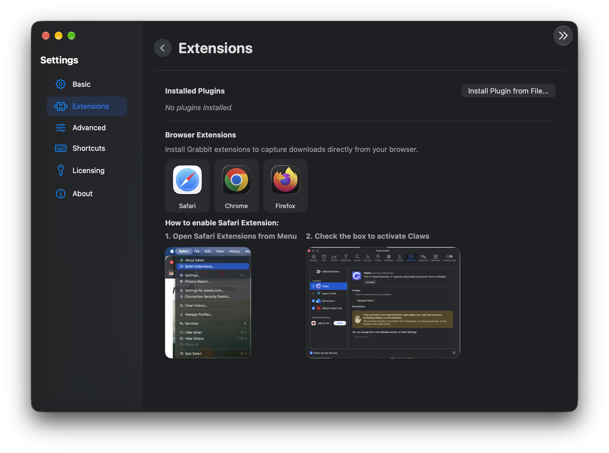
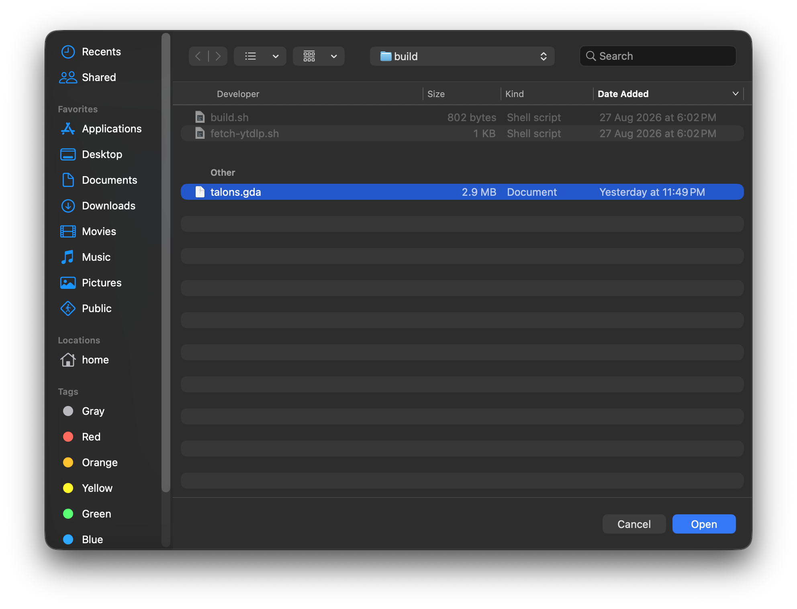
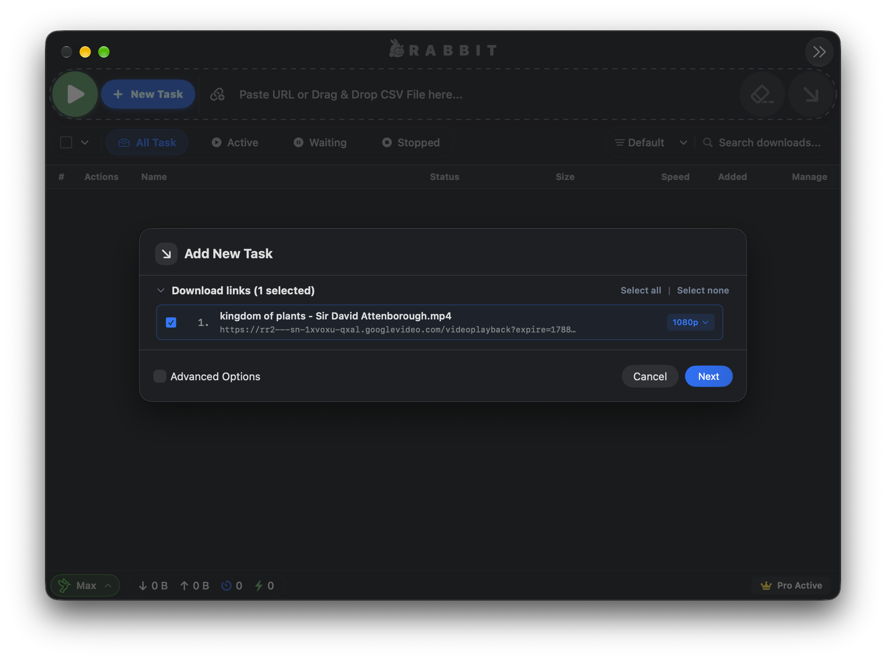

Talons addon for Grabbit
Universal high-speed stream extractor for over 2,000+ popular media platforms.
★★★★★ 4.9 / 5 Write a review

How to run addon
Follow this quick guide to install and enable the Talons add-on inside Grabbit, unlocking 4K/8K video extraction and high-speed multi-part media downloads.
-
1
Open Grabbit Settings
Launch Grabbit. Press Cmd + , or click the gear icon in the toolbar, navigate to the Extensions tab on the left sidebar, and click "Install Plugin from File...".
If you don't have Grabbit yet, download it from the official Grabbit release page.

-
2
Select the talons.gda bundle
In the file dialog that appears, locate and select the downloaded
talons.gdafile from your Downloads folder.Grabbit will immediately verify the package integrity, extract the Python runtime hooks, and register the extractor definitions.

-
3
Download from 2,000+ Supported Sites
You're all set! Paste any video or audio URL into Grabbit. Talons will instantly match the stream, parse highest available resolutions (4K 60fps HDR, 1080p, or lossless audio), and download using Grabbit's turbocharged multi-connection engine.

Engineered for Power Users
Why Talons is the indispensable companion plugin for Grabbit.
High-Efficiency Architecture
Built for optimal throughput and negligible memory footprint, ensuring rapid resolution and download speeds.
Direct Upstream Sync
Directly synchronized with the open-source yt-dlp project, ensuring extractor algorithms are always up-to-date with changing media sites.
Smart Stream Selection
Intelligently negotiates native MP4/M4A containers for high-performance, hardware-accelerated playback and editing.
Lossless Audio Mode
Need just the track? Extract crystal-clear AAC or MP3 audio streams at maximum bitrate with automatic ID3 tag preservation.
Zero Binary Bloat
Pure, lightweight Python module execution with zero bundled adware, analytics, or background telemetry.
Turbo Multi-Connection
Harness Grabbit's high-speed split-chunk downloading protocol to saturate your gigabit connection on video streams.
How useful is this for you?
Read what content creators, video editors, and power users say about Talons.
“Talons is the missing piece for Grabbit! Downloading high-bitrate 4K footage and streams for editing has never been smoother. Seamless integration.”
“Talons is a must-have extension if you use Grabbit. Audio extraction at 320kbps is instantaneous, and the multi-stream format matching works flawlessly every single time.”
“Absolutely love the Talons plugin for Grabbit! It gives you the full power of yt-dlp directly within Grabbit's native interface. Quick, clean, and blazing fast.”
About Talons Addon
Grabbit is an ultra-fast, modern download manager. With its high-performance download accelerator, users can maximize bandwidth, schedule downloads, and organize media seamlessly. However, modern dynamic video hosting platforms deliver fragmented streams that require intelligent stream manifest parsing.
To capture videos and audio from 2,000+ online media platforms, we created Talons, built on the battle-tested open-source yt-dlp engine. This extension integrates directly with Grabbit to resolve URLs, determine optimal video/audio containers, and dispatch download tasks straight to Grabbit's accelerated multi-part network engine.
With source code fully audited and available on GitHub, Talons is 100% free, safe, and open source under the MIT License.
User’s Reviews
Share your thoughts or leave feedback for the community
Cleanest setup experience ever. Just dropped `talons.gda` into Grabbit and 4K stream downloads started rolling immediately at 80 MB/s.
The yt-dlp upstream sync ensures zero broken video extractors. So much better than standalone bloated downloader apps!